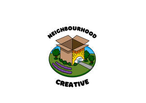

Trade Mark Journal No.2025/020 16 May 2025
UK00004152185 24 January 2025 (16,41)

- Class 16
- Comic books; Manga comic books; Comic magazines; Comic strips' comic features; Book covers; Story books; Comic strips; Comics; Sketch books; Newspaper comic strips; Cheque book covers; Series of non-fiction books; Printed comic strips; Book bindings; Series of fiction books; Book jackets; Books; Book binders; Fiction books; Graphic art books; Non-fiction books; Poster books; Comic strips [printed matter]; Writing books; Book wrappings; Check book covers; Coloring books; Manga graphic novels; Book ends; Autograph books; Book marks; Drawing books; Writing or drawing books; Fantasy books; Song books; Leather book covers; Book markers; Manuscript books; Copy books; Books featuring fictional stories; Printed books; Leather appointment book covers; Book binding material; Colouring books; Reference books; Picture books; Cheque book cases; Recipe books; Books featuring fantasy stories; Printed music books; Painting books; Covers for books; Paper book markers; Guide books; Hymn books; Series of computer game hint books; Covers for cheque books; Cheque book holders; Commemorative books; Wallpaper sample book; Guest books; Cookery books; Flip books; Graphic novels; School writing books; Pop-up books; Cheque books; Music books; Coupon books; Wirebound books; Gift books; Novels; Check book holders; Jackets of paper for books; Sticker books; Prayer books; Memorandum books; Resource books; Baby books [storybooks]; Book binding materials; Appointment books; Birthday books; Music note books; Note books; Check book cases; Travel books; Blank journal books; Educational books; Coloring books for adults; Romance novels; Wedding books; Scrap books.
- Class 41
- Film production services; Scriptwriting services; Video production services; Film studio services; Photography services; Recording services; Dubbing services; Movie studio services; Video editing services for events; Subtitling services; Animation production services; Television studio services; Show production services; Aerial videography services; Theatrical production services; Commercial training services; Recording studio services for films; Provision of recording studio services; Theatre production services; Provision of video recording studio services; Video rental services; Theater production services; Video recording services; Post-production editing services in the field of music, videos and film; Audio production services; Cinema services; Studio services (Recording -); Recording studio services; Video entertainment services; Photographer services; Theatre services; Recording studio services for television; Training services; Cinema studio services; Live entertainment production services; Studio services for the recording of videos; Recording studio services for videos; Music production services; Radio production services; Cinematographic film studio services; Services for the production of entertainment in the form of film; Information services relating to video films; Movie schedule information services; Education services relating to quality services; Training services relating to the cleaning of restaurants; Scriptwriting services for non-advertising purposes; Education services relating to the provision of restaurant services; Training services relating to the cleaning in hospitals; Providing audio or video studio services; Training services relating to the cleaning of factories; Theatre booking services; Services for the production of cine-films; Services for production of cine-films; Training services relating to the cleaning of offices; Recreation services; Recording, film, video and television studio services; Manufacturing training services; Services for the production of radio programmes; Training services for cinema technicians; Services for the production of entertainment in the form of video; Training services relating to the cleaning of hotels; Training services relating to the selling of vehicles; Entertainment services; Education services relating to photography; Live show production services; Recreation and training services; Cinematographic entertainment services; Audio recording and production services; Lighting technician services for events; Training services relating to logistics; Rehearsal [recording] studio services; Concert services; Training services relating to the repair of vehicles.
Samson Alexander